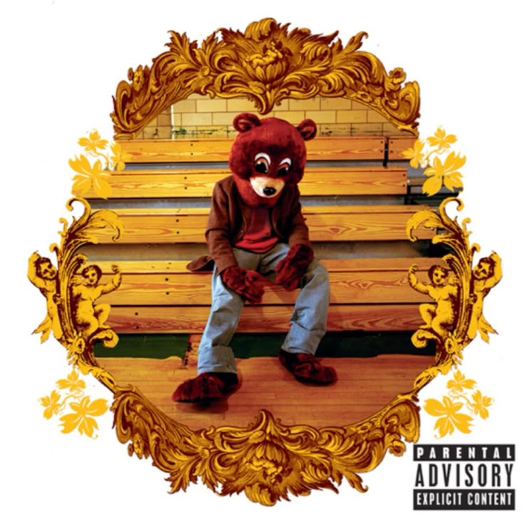
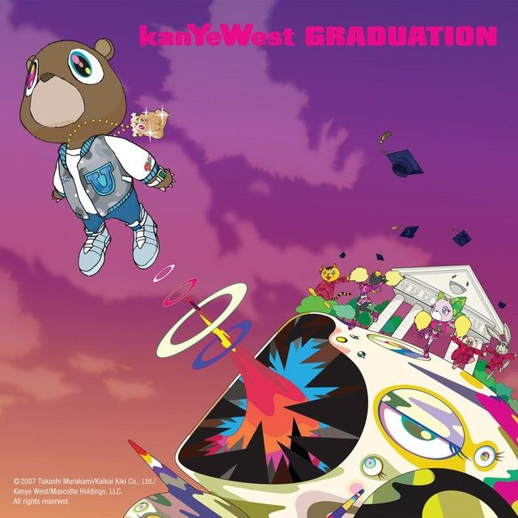
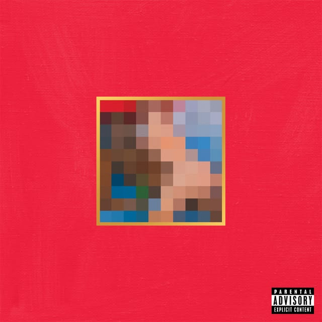

GOAT del rap

The College Dropout

Graduation

My Beautiful Dark Twisted Fantasy
Kanye West, también conocido como Ye, es un rapero, productor y diseñador estadounidense que ha marcado profundamente la industria musical y la cultura pop. Comenzó su carrera como productor trabajando con grandes artistas, pero rápidamente destacó como solista con su álbum debut "The College Dropout", el cual revolucionó el hip-hop con un estilo más personal y emocional. A lo largo de su carrera, ha lanzado álbumes icónicos como "Graduation" y "My Beautiful Dark Twisted Fantasy", siendo reconocido por su innovación, creatividad y constante evolución artística. Además de la música, Kanye ha incursionado en la moda, colaborando con importantes marcas y creando su propia línea. Su personalidad polémica y su forma única de expresarse lo han mantenido en el centro de atención mediática, convirtiéndolo en una de las figuras más influyentes y debatidas del entretenimiento moderno.
Fanpage no oficial
Este sitio es una página de fans sin fines oficiales.
No recopilamos datos personales.